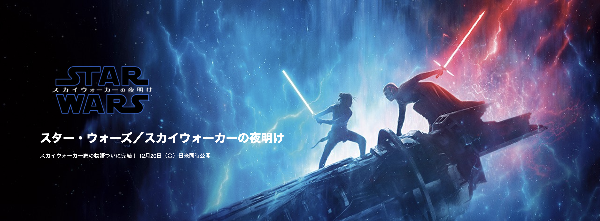
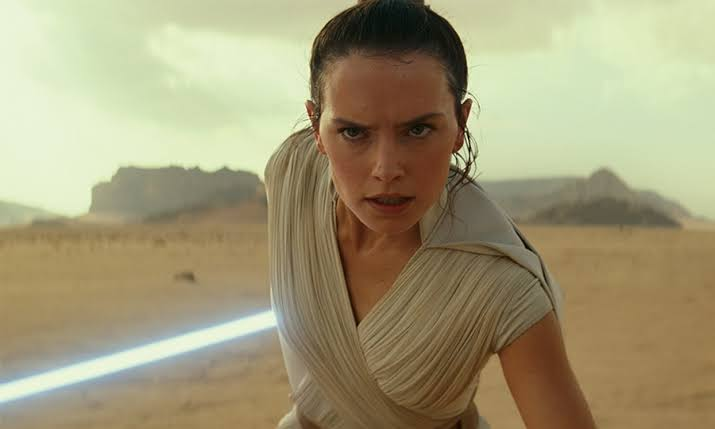
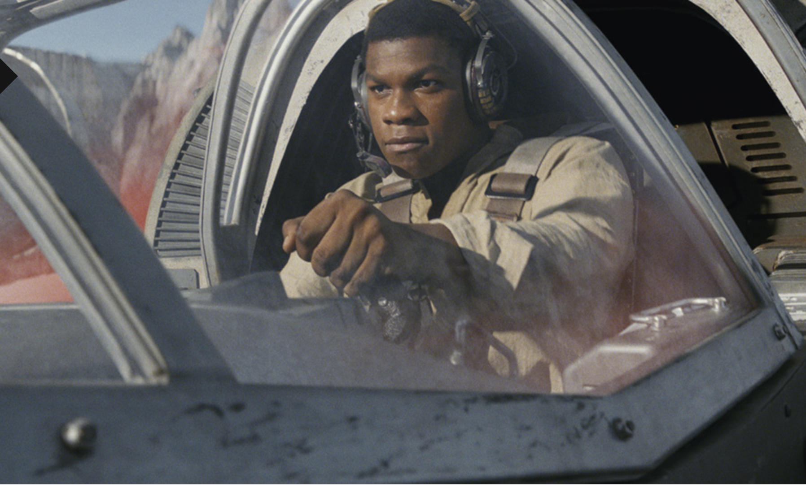
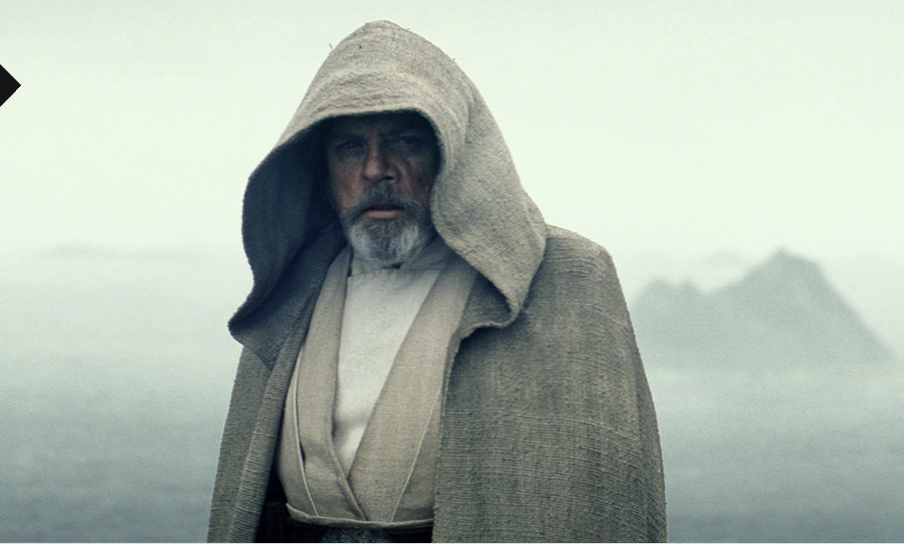
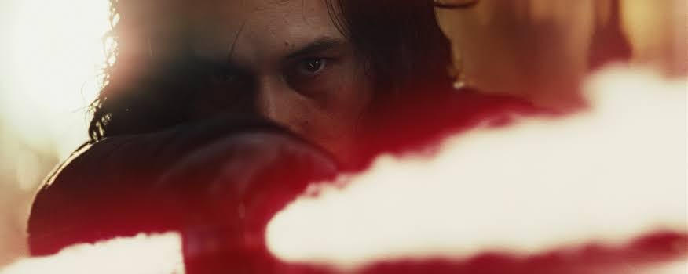

｜
HOME
｜
スターウォーズ
｜
ディズニー
｜
スターウォーズの新作映画について少しだけ紹介するページ
スター・ウォーズ／スカイウォーカーの夜明け
今年の12/20に上映されます!!

登場人物
ジェダイ
レイ

フォースの力が覚醒しつつあるレイは、この銀河最後のジェダイ・マスターでありレジスタンスにとって最後の希望であるルーク・スカイウォーカーを探して、オクトーの隠れた世界までやってくる。伝説のヒーローを見つけ出せることを望んでいたが、彼女が実際に見つけ出したのは、そんな彼女の期待に異を唱える男だった。
フィン

フィンはかつてファースト・オーダーで仲間だった者たちを相手に戦うという大義に身を捧げる、そして、レジスタンスがファースト・オーダーの追跡者たちを大胆に迎え撃つ準備を進める中で、フィンは自由のためのこの戦いで自分のすべきことをする覚悟を決める。
ルーク・スカイウォーカー

ジェダイ騎士団を再建しようという彼の試みが破綻してしまった後、ルーク・スカイウォーカーはこの銀河から姿を消して、惑星オクトーでつつましやかな暮らしを送っていた。今、レジスタンスは、ファースト・オーダーの邪悪な企てを阻むため、隠遁者となったこのヒーローを必要としている。
帝国軍
カイロレン

スカベンジャー（廃品回収業者）のレイに敗北の痛手を負わされたカイロ・レンは、レジスタンスを壊滅させるという邪悪な企てに再び焦点を合わせる。しかしカイロ・レンは、暗黒のフォースが増し続けているとはいえ、影の師である最高指導者スノークに自身の力を証明してみせるにはまだまだ足りない。
見所
映画予告でレイが暗黒面に落ちていたかの様なシーンがあったので, カイロレンとレイが最後に暗黒面・ジェダイのどちら側にいるのかが楽しみですね！